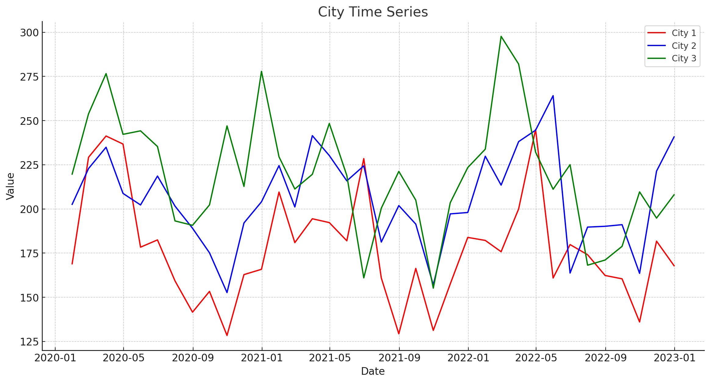
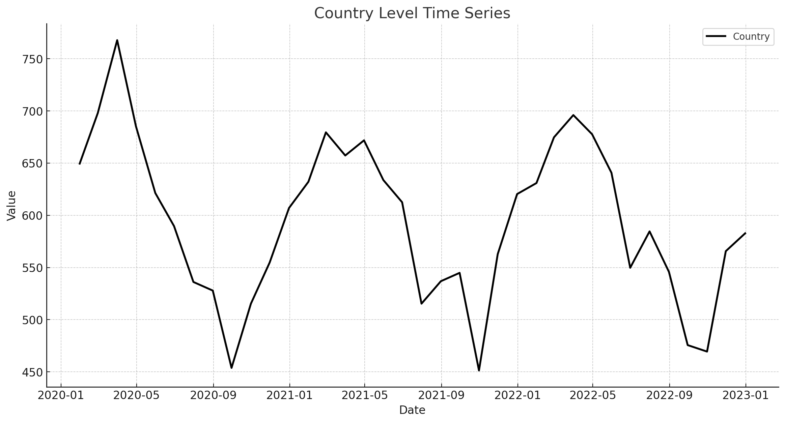
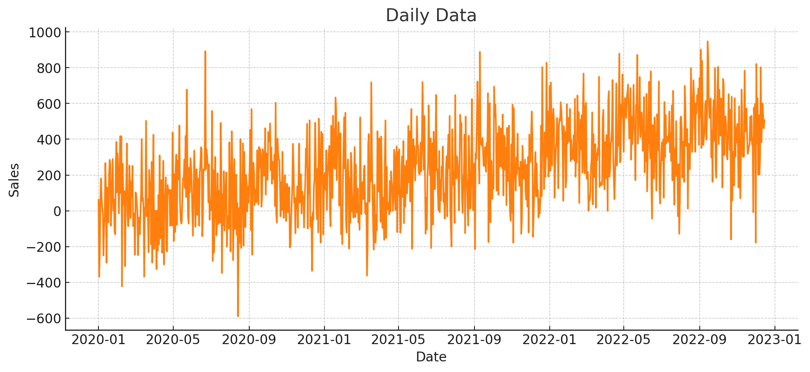
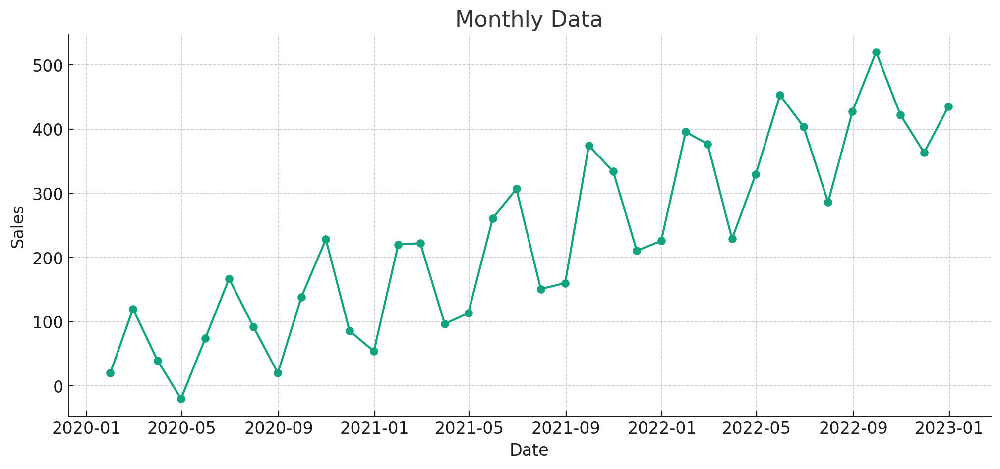

Time Series First Principles Series
This post dives into the fourth principle of a good time series forecast, the higher the grain the higher the accuracy. Check out the initial post in this series to get a high level view of each principle.
- Domain Expertise
- Garbage In Garbage Out
- The Future Is Similar To The Past
- Higher Grain Higher Accuracy
- Order Is Important
- The Magic Is In The Feature Engineering
- Simple Models Are Better Models
- Capture Uncertainty
- Model Averages Are King
- Deep Learning Last
Clear Skies
When planes take off from the ground they climb high into the sky. During that 5-10 minute period passengers have to stay seated with their seatbelt fastened. It’s only after the plane reaches 10,000 feet people can start to get up and move around the plane. Eventually the plane can reach an altitude of 40,000 feet. To compare, the peak of Mount Everest is 29,000 feet off the ground. Planes go up that high because it’s easier to fly the plane and more efficient. If planes flew a few feet off the ground it would be a lot bumpier ride, having to deal with changing weather and turbulence.
Forecasting is similar to flying a plane. Training a machine learning (ML) model at a higher grain of data is akin to a plane climbing in altitude. There is less turbulence (noise) in the data and your forecast has a better chance of being more accurate. You can either climb in altitude at the individual time series grain, or by the date grain. Let’s discuss each of them along with other methods.
Time Series Grain
Think of a higher time series grain as an aggregation of your original data. For example you might have product sales across a bunch of cities, where each city is a time series. Individual cities might have hard to model trend and seasonality, but when combined at a total country-level, it can be easier to model. Take the example charts below. Each city might be noisy but climbing in altitude up to the county level makes it easier to spot trends and seasonality.
 
Date Grain
In a perfect world we would be able to forecast our businesses down to the day, or even minute, across the next 10 years. This is sadly not the case. The more granular you try to forecast at the date grain, the noisier the data is going to be, and the harder it will be to create accurate forecasts. Unless there is an absolute need to forecast at a certain level, I almost always recommend a higher date grain. Take the example charts below. See how aggregating daily data to a monthly date grain level makes it easier to spot trends and seasonality.
 
In the finance org, the most common date grain to forecast at is month. This gives a healthy balance of being able to forecast long periods of time while also being able to update your forecast with new historical data every few weeks.
Here is another important point to call out. The longer your forecast horizon, the higher the date grain you should forecast at. Here are some recommendations based on your forecast horizon (how many periods you want to forecast). For example, if you’re trying to forecast out the next 6 months at the daily grain, you might get better results if you aggregate up to the monthly grain and forecast by month instead.
- Daily Grain: 1-90 day forecast horizon
- Weekly Grain: 1-12 week forecast horizon
- Monthly Grain: 1-18 month forecast horizon
- Quarterly Grain: 1-8 quarter forecast horizon
- Yearly Grain: more than 1 year forecast horizon
Hierarchical Forecasting
A potential “best of both worlds” solution to the data grain issue is to use a hierarchical forecast. This is where you can train models at different grains of the data, then use a statistical process to reconcile each forecast together so they are in sync. Our forecasting godfather, Rob Hyndman, has done a lot of great work in this space. Here is a chapter from his book on hierarchical forecasting.
Let’s go back to our time series grain example. Using a hierarchical forecast you could train models and create forecasts for each city, then do the same at the total country-level, then finally do the same at a total world wide level across all countries. This is a standard hierarchical approach shown in the chart below. This hierarchical process blends a “bottoms up” forecast of creating predictions at the lowest level by city, with a “tops down” forecast of creating predictions at the highest global level. A statistical process is then used to make the “tops down” forecast equal the “bottoms up” forecast, optimizing for accuracy at all levels of the hierarchy.

The same idea can be applied at the date grain too. Where you can forecast at the daily level, weekly level, and monthly level. Then use a reconciliation process to get the final forecast at the daily level that is also accurate when summing up by month. This can work well if a monthly forecast is more accurate, but the final forecast needs to be at a daily level.
Allocations
Another option is to take a forecast at a higher grain and allocate it down to a lower grain using simple allocation logic. This process can replace the more complicated hierarchical forecasting discussed earlier. Simple allocations can be done in two ways.
The first is to take historical values and create a percent split to apply to the final forecast. For example we can create a forecast at the country-level, then split that out by city. The split percent by city (allocation percent) can be calculated based on how much each city was the percent of total country over the last few years. This can be broken down by period. So you can get a specific percent split for each month on average in the past. This approach helps maintain historical seasonality across each time series (each city). See the charts below for an example of using two historical years of monthly data to create the final allocation percentages.
| Month | City A % | City B % | City C % |
|---|---|---|---|
| Jan 2021 | 30.87% | 30.08% | 39.05% |
| Feb 2021 | 28.11% | 23.90% | 47.99% |
| Mar 2021 | 23.77% | 47.43% | 28.81% |
| Apr 2021 | 31.26% | 18.42% | 50.32% |
| May 2021 | 39.50% | 34.08% | 26.42% |
| Jun 2021 | 50.58% | 30.98% | 18.44% |
| Jan 2022 | 36.33% | 31.79% | 31.88% |
| Feb 2022 | 19.79% | 40.74% | 39.47% |
| Mar 2022 | 19.95% | 28.99% | 51.06% |
| Apr 2022 | 20.37% | 26.76% | 52.87% |
| May 2022 | 41.37% | 41.53% | 17.10% |
| Jun 2022 | 43.86% | 41.10% | 15.04% |
| Month | City A % | City B % | City C % |
|---|---|---|---|
| Jan | 33.60% | 30.93% | 35.46% |
| Feb | 23.95% | 32.32% | 43.73% |
| Mar | 21.86% | 38.21% | 39.93% |
| Apr | 25.82% | 22.59% | 51.60% |
| May | 40.43% | 37.81% | 21.76% |
| Jun | 47.22% | 36.04% | 16.74% |
| Month | Country Forecast | City A % | City B % | City C % | City A Forecast | City B Forecast | City C Forecast |
|---|---|---|---|---|---|---|---|
| Jan 2023 | 15000 | 33.60 | 30.93 | 35.46 | 5040 | 4639.5 | 5319 |
| Feb 2023 | 15200 | 23.95 | 32.32 | 43.73 | 3640.4 | 4912.64 | 6646.96 |
| Mar 2023 | 15400 | 21.86 | 38.21 | 39.93 | 3366.44 | 5884.34 | 6149.22 |
| Apr 2023 | 15600 | 25.82 | 22.59 | 51.60 | 4027.92 | 3524.04 | 8049.6 |
| May 2023 | 15800 | 40.43 | 37.81 | 21.76 | 6387.94 | 5973.98 | 3438.08 |
| Jun 2023 | 16000 | 47.22 | 36.04 | 16.74 | 7555.2 | 5766.4 | 2678.4 |
The second approach is to use a future forecast to create the allocation splits. For example we can create future forecasts at the country-level and also at the city-level. Then we can create the split percent for each city by taking the city forecast and summing it up to the country-level, then taking the percent split for each city. These splits can then be applied to the final country-level forecast to get the final forecast by city. This approach uses the more robust country-level forecast, while still trying to capture future changing trends and seasonality by city.
| Month | Country Forecast | City A Forecast | City B Forecast | City C Forecast |
|---|---|---|---|---|
| Jan 2023 | 10,000 | 4,000 | 3,500 | 2,000 |
| Feb 2023 | 10,500 | 4,200 | 3,000 | 3,300 |
| Mar 2023 | 11,000 | 4,500 | 3,200 | 3,300 |
| Apr 2023 | 11,500 | 4,800 | 3,400 | 3,300 |
| May 2023 | 12,000 | 5,000 | 3,500 | 3,500 |
| Jun 2023 | 12,500 | 5,200 | 3,800 | 3,500 |
| Month | City A % | City B % | City C % |
|---|---|---|---|
| Jan 2023 | 42.11% | 36.84% | 21.05% |
| Feb 2023 | 40.00% | 28.57% | 31.43% |
| Mar 2023 | 40.91% | 29.09% | 30.00% |
| Apr 2023 | 41.74% | 29.57% | 28.70% |
| May 2023 | 41.67% | 29.17% | 29.17% |
| Jun 2023 | 41.60% | 30.40% | 28.00% |
| Month | City A Final Forecast | City B Final Forecast | City C Final Forecast |
|---|---|---|---|
| Jan 2023 | 4,211 | 3,684 | 2,105 |
| Feb 2023 | 4,200 | 3,000 | 3,300 |
| Mar 2023 | 4,500 | 3,200 | 3,300 |
| Apr 2023 | 4,800 | 3,400 | 3,300 |
| May 2023 | 5,000 | 3,500 | 3,500 |
| Jun 2023 | 5,200 | 3,800 | 3,500 |
Reversal
A more granular forecast can sometimes be more accurate, especially if the more detailed grain uncovers more stable trends and seasonality that can be modeled. Take for example a product whose sales are impacted by Chinese New Year. That holiday doesn’t happen on the same day every year, and it can even happen in different months. Sometimes in January, and sometimes in February. Since it happens over multiple days the split between the two months can change drastically from year to year. Creating a forecast at the daily level, adding information around when Chinese New Year is happening, could result in a more accurate forecast. You could also take the approach of a monthly forecast, and have a numeric feature that lists how many days of Chinese New Year falls within each month.
If your initial data at the higher grain is noisy or has low forecast accuracy, consider asking the domain expert if there could be more insightful trends and seasonality at a lower grain.
finnts
Hierarchical forecasting is a tricky business, thankfully my open-source package finnts can automatically do hierarchical forecasting. The package can even use external regressors (features) in the hierarchical approach! Today finnts supports hierarchical forecasting at the time series grain. Hopefully one day we will implement hierarchical forecasting at the date grain, stay tuned. This is the same package I use internally at my job, allowing my company to replace hundreds of billions of manual forecasts with machine learning. Check out the package and see for yourself.
Final Thoughts
Just as pilots navigate to higher altitudes to find smoother skies and better efficiency, so too must we elevate our approach to data granularity in forecasting when needed. By stepping back from the minutiae of daily or city-level data and ascending to monthly or country-level aggregations, we enable our models to capture more coherent patterns and deliver forecasts with improved precision. This strategic shift—from a granular view to a broader perspective—is not just about avoiding turbulence; it’s about leveraging stability to enhance predictability.
However, the real magic often lies in blending these approaches through hierarchical forecasting. This method combines the detailed insights available at lower levels with the clarity and simplicity of higher-level forecasts, ensuring both depth and breadth in our predictive capabilities. As we continue to refine our techniques and tools, like the finnts package, we are paving the way for a future where complex, multi-tiered forecasting is as streamlined as a flight cruising at 40,000 feet.
In your journey through data, remember that the right altitude can make all the difference. Rising above the noise can provide not just clearer views, but also far-reaching insights. So, buckle up—we’re about to take forecasting to new heights.